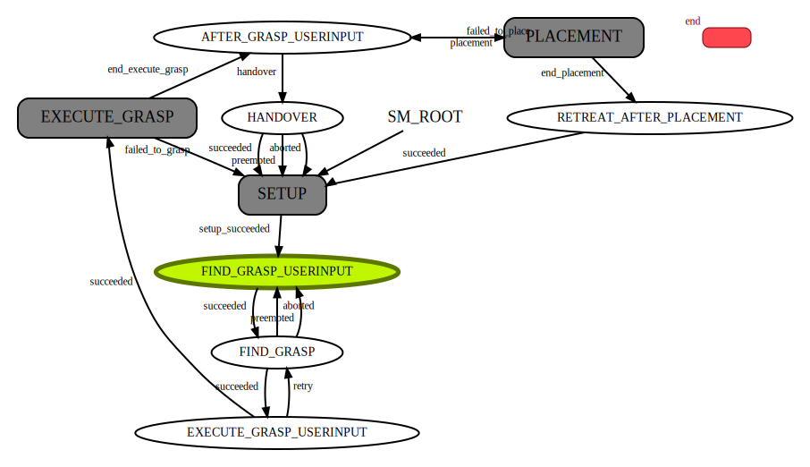

5. Overview of the statemachine
This page gives an overview of the statemachine and its components. It is intended to give a high-level understanding of the statemachine. For a more detailed description of the statemachine, see Detailed Description of the state machine.
The statemachine is a finite state machine that is used to control the behavior of the robot. It is implemented in python with the smach library.
The following diagram shows the structure of the statemachine:
{kind=link}
It currently consists of 5 main components:
FindGrasp: This component is responsible for calling the object detector, pose estimator and grasp pose estimator to find graspable objects and return the grasp pose(s) for these objects.
ExecuteGrasp: This component is responsible for executing the grasp(s) that was found by the FindGrasp component. It also updates the collision environment.
RobotSetup: This component is responsible for moving the robot and all of its joints into a predefined position.
Placement: This component is responsible for placing the grasped, known object to its appointed location.
Handover: This component is responsible for handing over the grasped object to a human.
UserInput states: These states are used to get user input from the operator. The prompts are displayed on the terminal that started the local grasping pipeline nodes.
Each of these components is implemented as a state machine (and therefore consists of multiple states), and the components are all combined into a single, big state machine that controls the behavior of the robot.
After the setup, you can choose between _SINGLE_GRASP_ an _CLEAR_TABLE_. Both sub state machine use the aforementioned components. _SINGLE_GRASP_ performs, as the name suggests, a single grasp with user inputs in between to choose between placement and handover. _CLEAR_TABLE_ switches between grasping an object and handing it over until the table is cleared without any user inputs needed.
5.1. FindGrasp
The FindGrasp component fetches the newest RGB and depth images from the camera and passes those to an object detector. If the detected objects are known objects the component calls a pose_estimator and uses the name of the object to look up the grasp annotations for that object. If the detected objects are unknown objects the component calls an unknown object grasp pose estimator to get the grasp pose without calling a pose estimator.
5.1.1. Outcomes
end_find_grasp: The grasp was found successfully.
failed: No object or grasp was found. This is also returned if the object detector/pose estimator/grasp pose estimator raise an exception.
5.1.2. Inputs
object_to_grasp (string): The name of the object to grasp. If no name is given (=empty string), the closest object is grasped instead.
5.1.3. Outputs
grasp_poses (list of geometry_msgs/PoseStamped): A list of grasp poses for the object that should be grasped.
grasp_object_bb (grasping_pipeline_msgs/BoundingBox3DStamped): The bounding box of the grasped object. This is used for collision checking when placing the object.
grasp_object_name (string): The name of the grasped object. This name is needed for placement to know where to place the object, as each object has a predefined placement area.
5.2. ExecuteGrasp
The ExecuteGrasp component is responsible for executing the grasp that was found by the FindGrasp component.
First, the table plane that the object is resting on is detected. Then, the collision environment is updated with the grasp_object_bb and the detected table. The grasp_object_bb is needed if placement should be done after the grasping. The table is needed to prevent the robot from colliding with the table.
The grasp poses are sorted by their orientation and distance. Top grasps are executed last. This means that the closest grasp pose that is not a top grasp is executed first. After trying all non-top grasps, the top grasps are executed in the same order (closest first). This is done because it is much harder for the robot to place top-grasped objects into a shelve.
Afterwards, the robot moves to the grasp pose and executes the grasp. Simultaneously, it records the transformation between the robot’s end-effector and the object’s bottom plane. This transformation is needed for placement to ensure that the object is placed in a manner that maintains the objects original orientation (i.e. the bottom side of the object when it was grasped, will also be the bottom side of the object after it is placed).
If the grasp failed, the component returns a ‘failed_to_grasp’ outcome.
If the grasp was succesful, the robot retreats from the table, moves the joints into a neutral position and drives to a predefined position in a way that should prevent the robot and its arm from coliding with any object (especially the table). Afterwards, ‘execute_grasp_success’ is returned.
5.2.1. Outcomes
failed_to_grasp: Execution of all provided grasp poses failed.
execute_grasp_success: The grasp was executed successfully.
5.2.2. Inputs
grasp_poses (list of PoseStamped): A list of grasp poses for the object that should be grasped. The grasp_poses are processed iteratively until the grasp was succesful or no further grasp pose remains.
grasp_object_bb (BoundingBox3DStamped): The bounding box of the grasped object. This is used for collision checking when placing the object.
5.2.3. Outputs
placement_surface_to_wrist (geometry_msgs/Transform): The transformation between the robot’s end-effector and the object’s bottom plane. This transformation is needed for placement to ensure that the object is placed in a manner that maintains the objects original orientation.
top_grasp (bool): True if the grasp pose is a top grasp, False otherwise.
5.3. RobotSetup
This component is responsible for moving the robot and all of its joints into a predefined position. This is needed to ensure that the robot is in a known state before any other state is executed.
More specifically, the robot moves in front of the table, the arm is moved in a way so that it does not cover parts of the camera, the gripper is opened and the head is moved so that it gazes at the table plane.
5.3.1. Outcomes
setup_succeeded: The robot and its joints were moved into the predefined position successfully.
5.3.2. Inputs
None
5.3.3. Outputs
None
5.4. Placement
This component is responsible for placing the grasped object to its appointed location. This also works for unknown objects with the caveat that you can only specify one placement area for all unknown objects.
It first looks up the name of the object to know where to place it. Then, it moves the robot to the placement area and adjusts the joint angles, so that the target plane is visible to the robot’s camera. Then the target plane is detected and the collision environment is updated to prevent the robot from colliding with this plane. Afterwards, suitable placement areas are detected on the target plane (i.e. areas where the object can be placed without colliding with other objects). Finally, the object is placed on the target plane by trying to place it on each of the detected placement areas (sorted by distance, so that the farthest area is tried first) until the object is either placed successfully or no further placement area remains.
When placing the object you also have to decide on the orientation of the object (i.e. not only which side of the object should be placed on the table, but also the orientation of the object in the plane). We don’t know which sides of the object are good for placing (this would require some intelligence or annotations). Therefore, the object is simply placed on the same side as it was standing on when it was grasped. This is done by using the transformation between the robot’s end-effector and the object’s bottom plane that was recorded during grasping. Additionally, the object is rotated so that the robots arm is coming from the front of the shelf. This basically means that, if the robot grasped the object from the (left/right) side, the object is rotated by 90 degrees so that the robot can place the object from the front. This is done to make it easier for the robot to place the object, by significantly reducing the risk of colliding with the shelf.
Note
MoveIt (the motion planning framework that we use to plan the motion of the robot) performs very inconsistently when it comes to placing objects. Therefore placement often fails and sometimes needs to be retried multiple times.
If you, however, have a lot of failed placements, you might want to check whether the robot is physically able to place the object without colliding with the shelf (e.g. the robot is not able to place a tall object on the shelf if it performed a top-grasp because the arm would collide with the shelf).
Otherwise you can try moving sashas table further away from the shelf because that increases the robots workspace and makes it easier to find a good, collision-free path.
5.4.1. Outcomes
end_placement: The object was placed successfully.
failed_to_place: The object could not be placed successfully.
5.4.2. Inputs
grasp_object_name (string): The name of the grasped object. This name is needed to know where to place the object, as each object has a predefined placement area.
placement_surface_to_wrist (geometry_msgs/Transform): The transformation between the robot’s end-effector and the object’s bottom plane. This transformation is needed to ensure that the object is placed on the same side as it was grasped.
5.4.3. Outputs
None
Note
The placement areas are defined in config/placement_areas.yaml. To add new placemet areas, adapt this file. If you want to change what placement area the HSR should currently use, take a look at config/config.yaml.
5.5. Handover
The Handover component is responsible for handing over the grasped object to a human. The robot’s arm is stretched out to make it as comfortable as possible for adults to take the object. The torque sensor in the robot’s wrist is used to detect when the object is taken by the human. When the torque sensor detects a force above a certain threshold, the robot releases the object and returns ‘succeeded’.
5.5.1. Outcomes
succeeded: The object was handed over successfully.
aborted: This outcome is currently not used.
preempted: This outcome is currently not used.
5.5.2. Inputs
force_thresh (float), optional: The threshold for the torque sensor to detect when the object is taken by the human. A default value is used if no threshold is passed or the passed threshold is <0.
5.5.3. Outputs
None